A quick tour of the app — where things live, and what each screen does.
Tap a blue pin on any screenshot below to see what it does.
Navigation
Everything in FlightLog is reachable from the navigation drawer (the ☰ icon, top-left of any
screen):
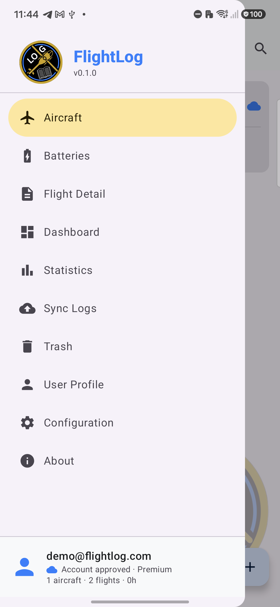
Aircraft — your fleet list, add/edit/quick-log a flight for any aircraft.
Batteries — your battery inventory, with usage stats per pack.
Flight Detail — a deep dive into one flight's phases and telemetry.
Dashboard — fleet-wide analytics at a glance.
Statistics — activity trends and per-flight telemetry charts over time.
Sync Logs — import telemetry CSVs or legacy logs in bulk.
Trash — recover an accidentally deleted flight, aircraft, or battery within 30 days.
User Profile — account status, subscription, and data controls.
Configuration — app-wide settings: crash reporting, voice AI consent, cache, and more.
About — app info, version, and the full privacy disclosure.
Screen by Screen
Aircraft
Your fleet at a glance — each card shows total flights, airtime, and last-flown date, with a
one-tap quick-log shortcut to start a new entry for that aircraft.
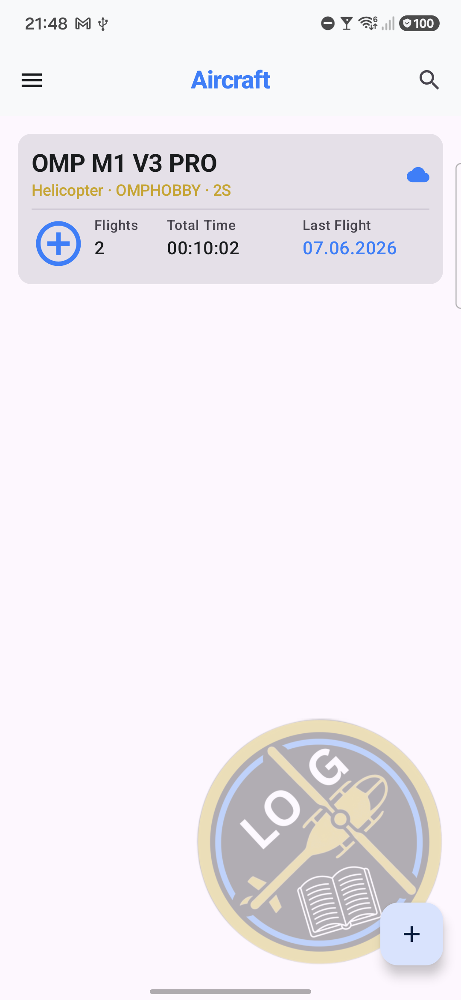
Open the navigation drawer — jump to any screen.
Search your fleet.
Tap the aircraft to edit its details.
Sync status — confirms this aircraft is backed up to the cloud.
Quick-log — one tap starts a new flight for this aircraft.
Tap the last-flown date to jump straight to that flight's detail page.
Add a new aircraft to your fleet.
New Flight
Log a flight by hand or via voice in seconds — aircraft, location, and duration, with compatible-battery
suggestions and optional tags. Reached via the quick-log shortcut on any Aircraft card.
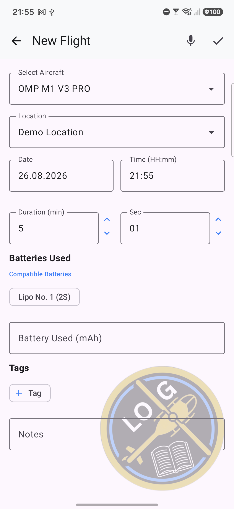
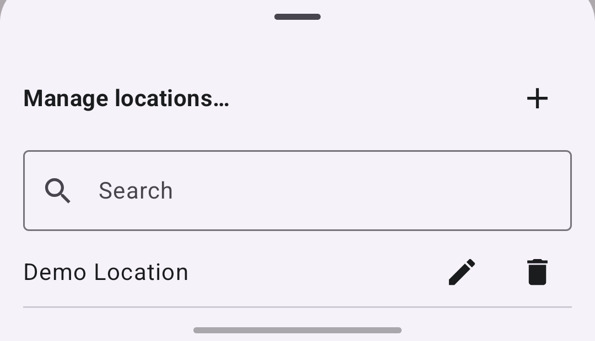
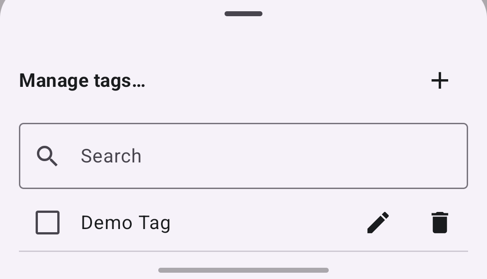
Back — discards this entry.
Dictate flight details by voice.
Save this flight.
Select aircraft.
Pick or add a flying location.
Compatible batteries — tap to mark which pack(s) you used.
Add a tag to categorize this flight.
Manage locations — add a new one.
Search your saved locations.
Rename a location.
Delete a location.
Manage tags — add a new one.
Search your saved tags.
Tap the checkbox to apply this tag to the flight.
Rename a tag.
Delete a tag.
Voice Entry
Hands-free logging — tap the mic on New Flight and describe your flight naturally: aircraft,
duration, battery, mAh used, tags, whatever you mention. Gemini AI transcribes what you said and
extracts structured flight details, auto-filling the form above for you to review before saving.
Off by default and consent-gated in Configuration; your speech is processed in real time and never
stored.
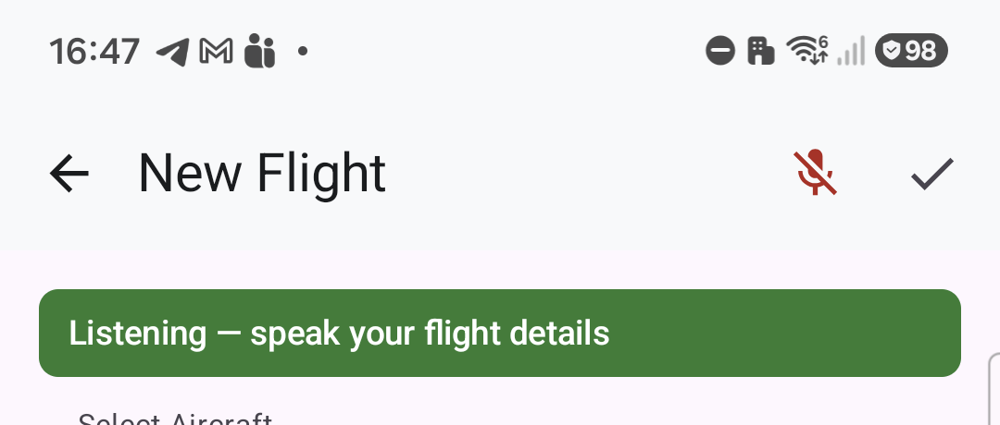
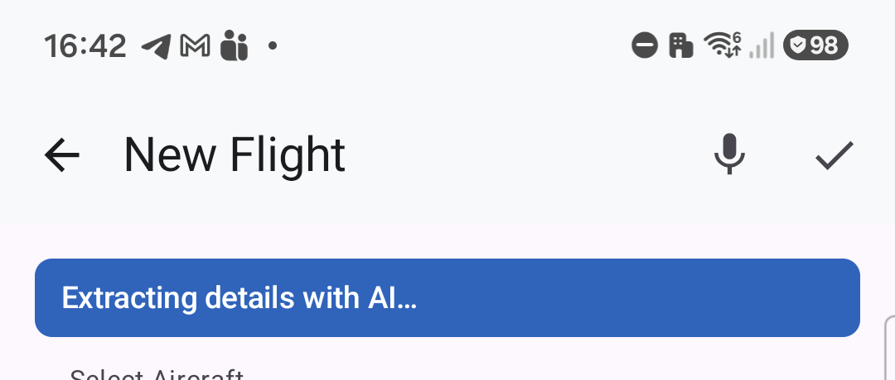
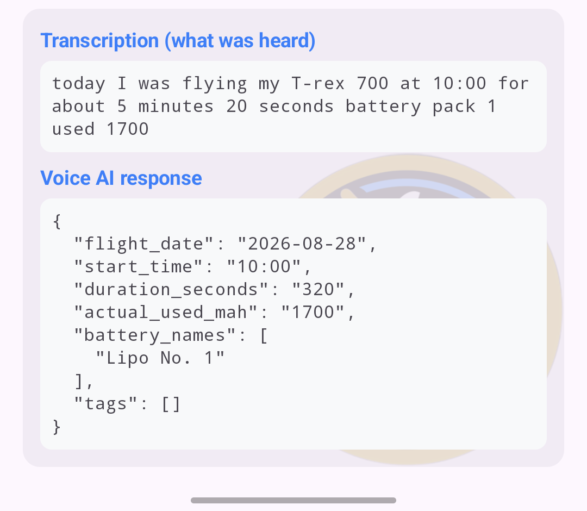
Mic — tap to start recording.
"Listening — speak your flight details" confirms it's capturing your voice.
Mic — tap again to stop recording.
"Extracting details with AI..." appears next.
Transcription — the exact words Gemini heard, so you can catch a mishearing.
Voice AI response — the structured fields it extracted, auto-filled into the form
for you to review and correct before saving.
Batteries
Battery tracking shows the number of flights, total usage time, and last-flown date for
every pack, so you always know what's been through the wringer.
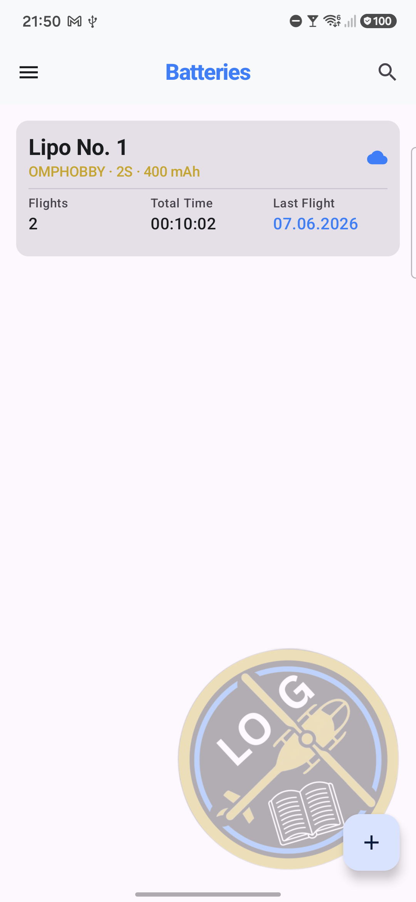
Open the navigation drawer.
Search your batteries.
Tap the battery to edit its details.
Sync status — confirms this battery is backed up to the cloud.
Tap the last-flown date to jump straight to that flight's detail page.
Add a new battery to your fleet.
Flight Detail
Every logged flight can be categorized with your own tags and compared against your fleet baseline. Telemetry adds automatically detected flight phases and detailed performance metrics on top.
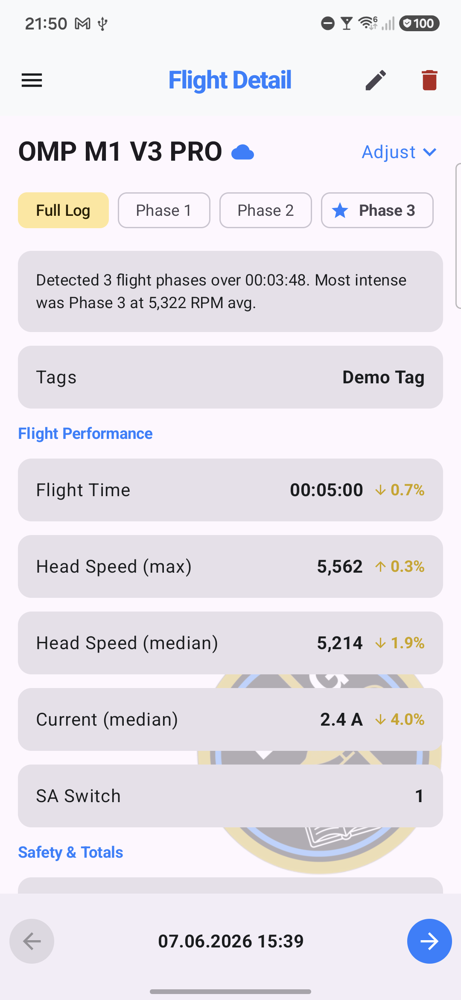
Open the navigation drawer.
Edit this flight's details.
Delete this flight — moves to Trash, recoverable for 30 days.
Sync status for this flight.
Switch between the Full Log and each auto-detected flight phase.
Jump to the previous (newer) flight.
Jump to the next (older) flight.
Dashboard
Fleet-wide stats at a glance — see flight count, airtime, and telemetry data automatically aggregated across your whole fleet, or filter by aircraft, battery, location, tag, or time range.
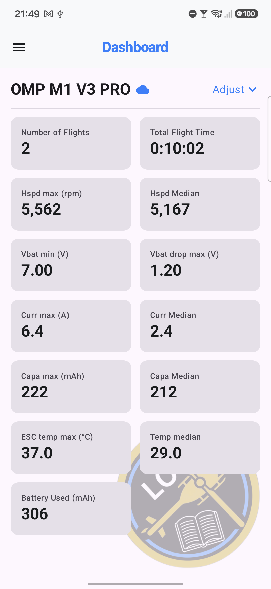
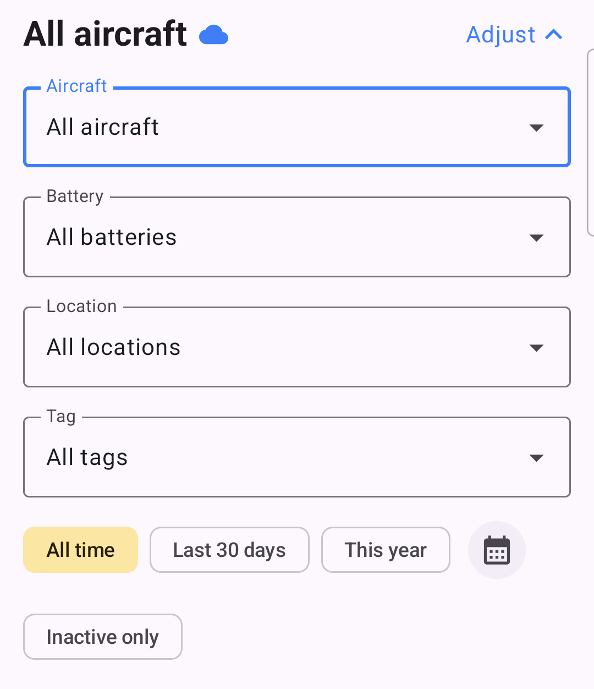
Open the navigation drawer.
Sync status.
Adjust — open the filter panel (aircraft, date range, battery, and more).
Tap "Number of Flights" to jump straight to your most recent flight's detail page.
Aircraft — narrow everything to one aircraft, or leave it on your whole fleet.
Battery — narrow results to flights using one specific pack.
Location — filter by flying field.
Tag — filter by your own custom tags.
All time — no date restriction (default).
Last 30 days — quick recent-activity preset.
This year — quick year-to-date preset.
Custom range — pick an exact start and end date.
Inactive only — show just your retired aircraft and batteries.
Statistics — Activity Insights
Charts your flying activity month by month, color-coded by aircraft — tap any bar to see that
month's per-aircraft breakdown.
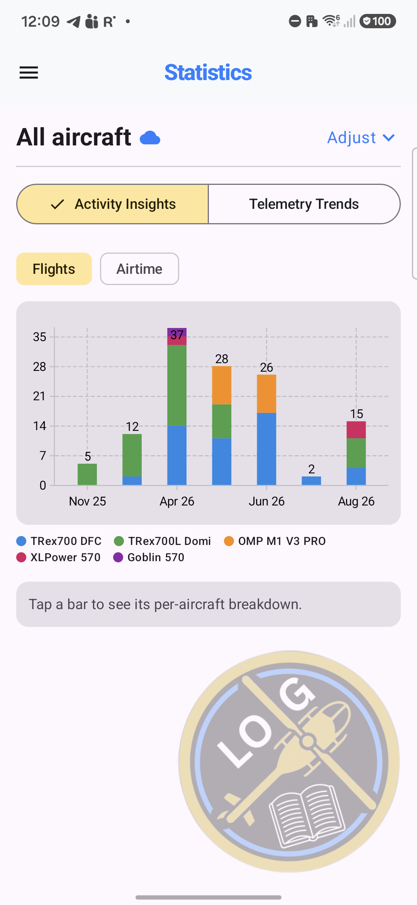
Open the navigation drawer.
Sync status.
Adjust — open the filter panel (aircraft, date range, battery, and more).
Activity Insights tab (this view).
Telemetry Trends tab — switch to per-flight sensor charts.
Flights — chart the number of flights per month.
Airtime — chart total flight time per month instead.
Statistics — Telemetry Trends
Plots per-flight sensor data over time — pick multiple metrics to compare trends side by side against your fleet average.
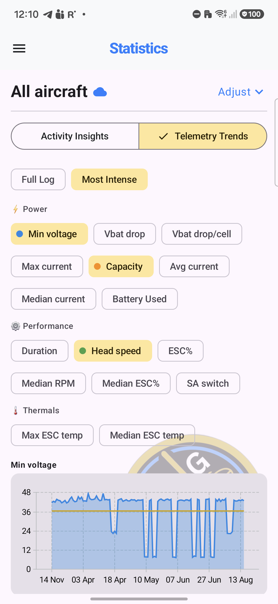
Open the navigation drawer.
Sync status.
Adjust — open the filter panel (aircraft, date range, battery, and more).
Switch back to Activity Insights.
Full Log vs. Most Intense — chart the whole flight or just its most intense phase.
Tap a metric to add it to the chart...
...tap another to compare it alongside the first (multi-select).
Sync Logs
Batch-import OpenTX/EdgeTX telemetry straight from your transmitter's SD card, with
configurable parsing rules — file size limits, batch size, minimum row count.
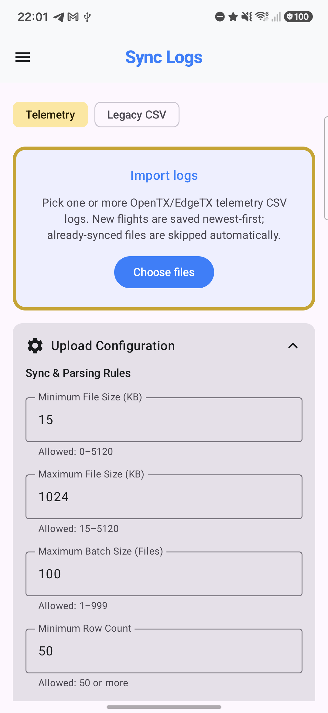
Open the navigation drawer.
Telemetry tab — import OpenTX/EdgeTX CSV logs.
Legacy CSV tab — import from another logbook app's export.
Choose files — pick one or more CSVs from your device.
Expand Upload Configuration to fine-tune parsing rules.
Trash
Every deleted flight, aircraft, and battery lands here first — recoverable for 30 days before
it's permanently purged, whether you delete it yourself or it expires automatically.
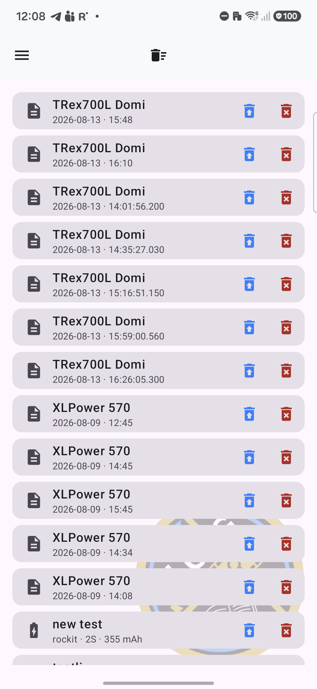
Open the navigation drawer.
Empty Trash — permanently delete everything in it at once.
Restore this item back to your active fleet/logs.
Delete this item permanently, right now (skips the 30-day wait).
User Profile
Your account at a glance — subscription status, fleet-wide stats, and full control over your
data, including permanent account deletion when you want it.
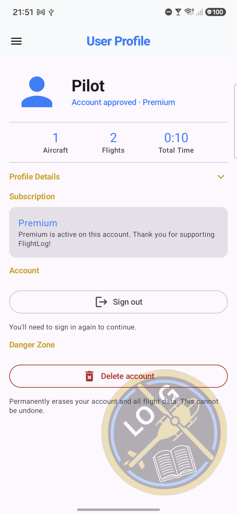
Open the navigation drawer.
Profile Details — expand to edit your pilot name, flying field, and AMA/FAA number.
Sign out of your account.
Delete account — permanently erases your account and all flight data.
Configuration
App-wide settings — crash reporting, voice AI consent, fleet visibility, and your data.
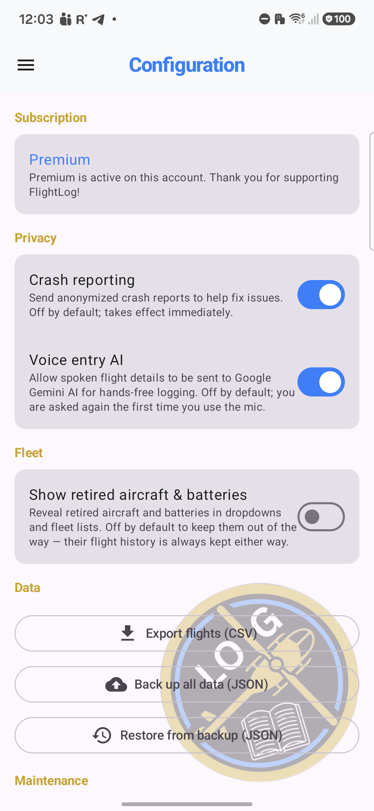
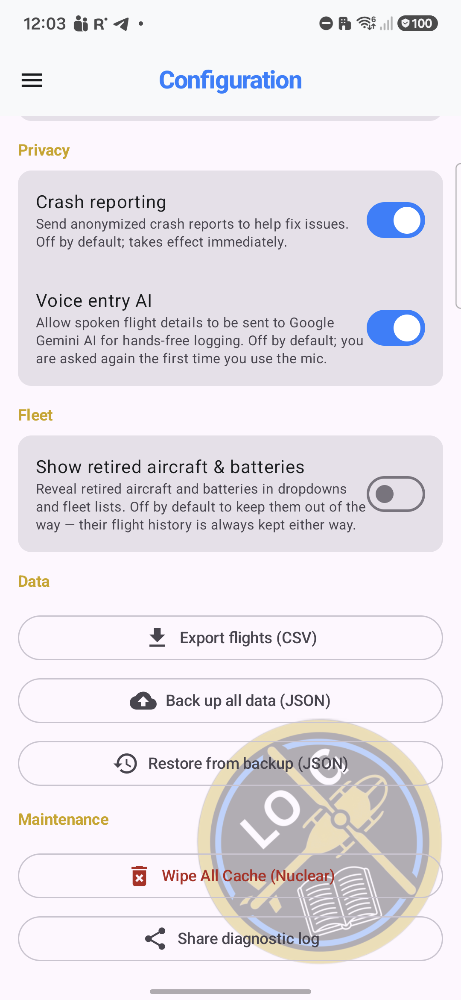
Open the navigation drawer.
Crash reporting — send anonymized crash reports to help fix issues.
Voice entry AI — allow spoken flight details to be sent to Gemini.
Show retired aircraft & batteries — reveal them in dropdowns and fleet lists.
Export flights (CSV).
Back up all data (JSON).
Restore from a JSON backup.
Wipe All Cache — full local cache reset, re-syncs from the cloud.
Share your diagnostic log (for troubleshooting with support).
About
Full transparency, in-app — exactly what FlightLog collects, why, and how to control it,
without having to leave the app.